Event Center, Trnava
Trnava, Topola, Srbija, 2026
Centar za događaje, delo QBC Architects, nalazi se usred voćnjaka u Trnavi kod Topole, a pored njega su dve male kuće za noćenje. Kada nema događaja, radi kao restoran. Arhitektura spaja savremeno ugostiteljsko projektovanje sa autentičnim karakterom šumadijskog pejzaža.
Koncept počiva na čistim konstruktivnim linijama i otvorenom toku prostora, bez nepotrebnih pregrada. Velike staklene površine brišu granicu između enterijera i okoline, pa priroda postaje deo svake prilike, od venčanja i proslava do poslovnih skupova i porodičnih okupljanja.
Rezultat je elegantan prostor koji se oslanja na jednostavnost, svetlost i vezu sa mestom, a ne na dekoraciju.
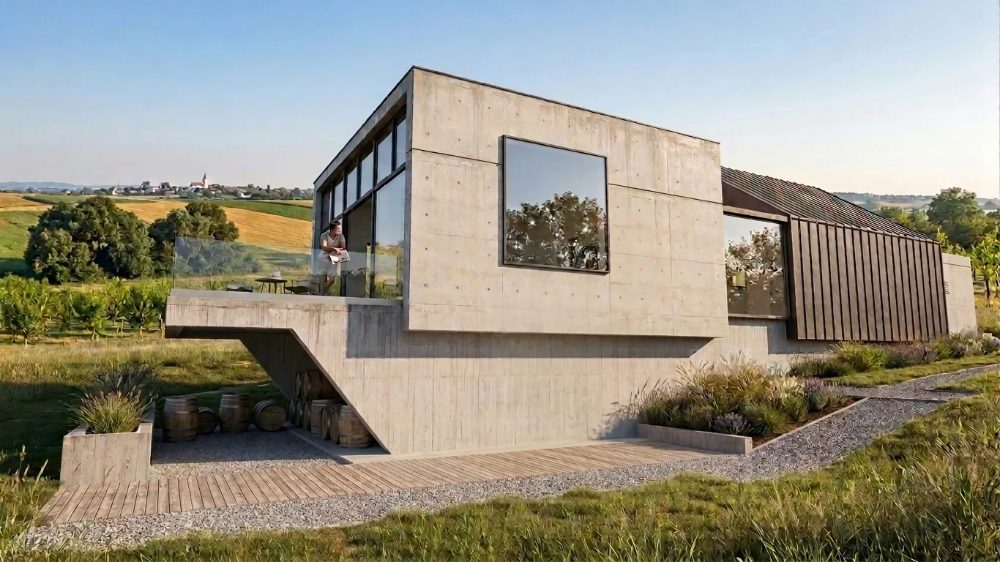
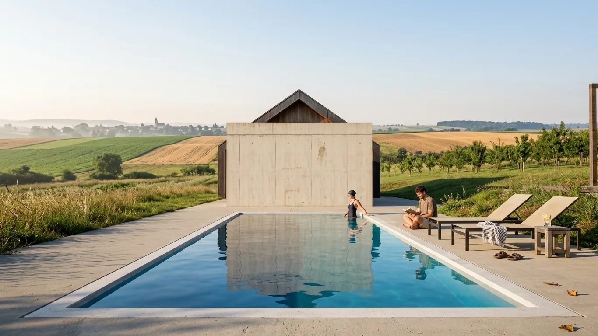
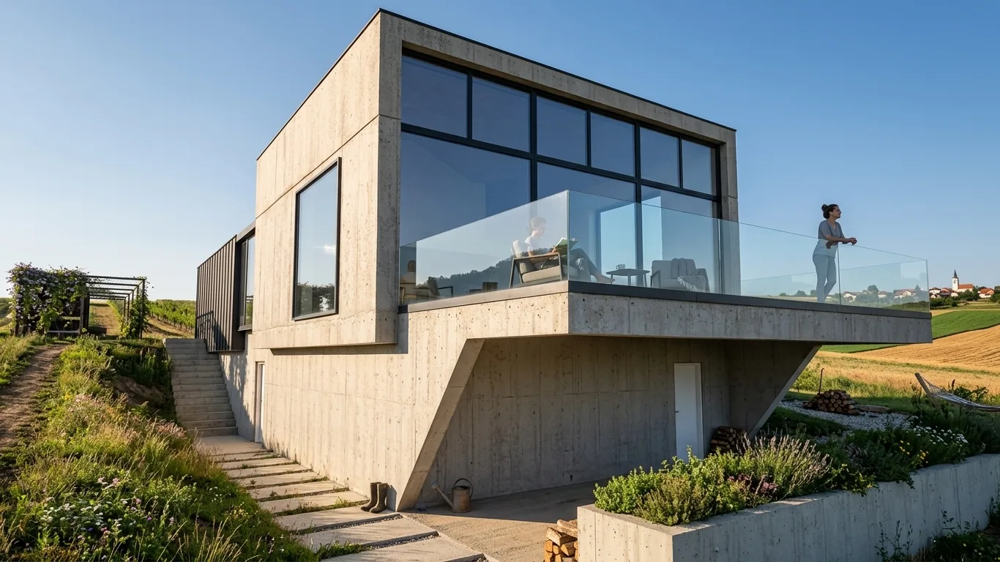
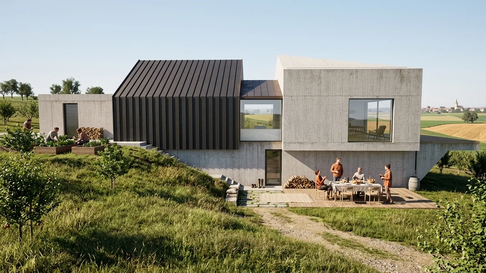
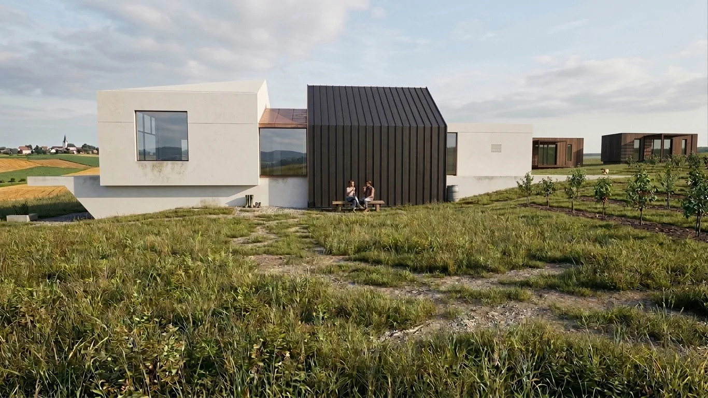
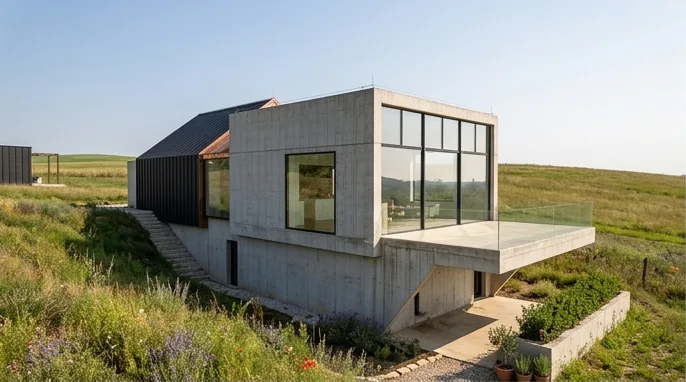
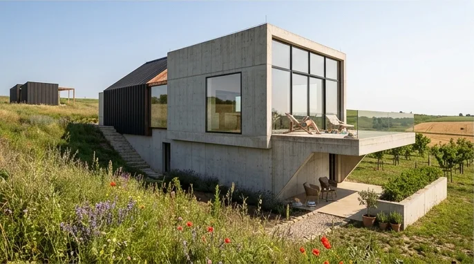
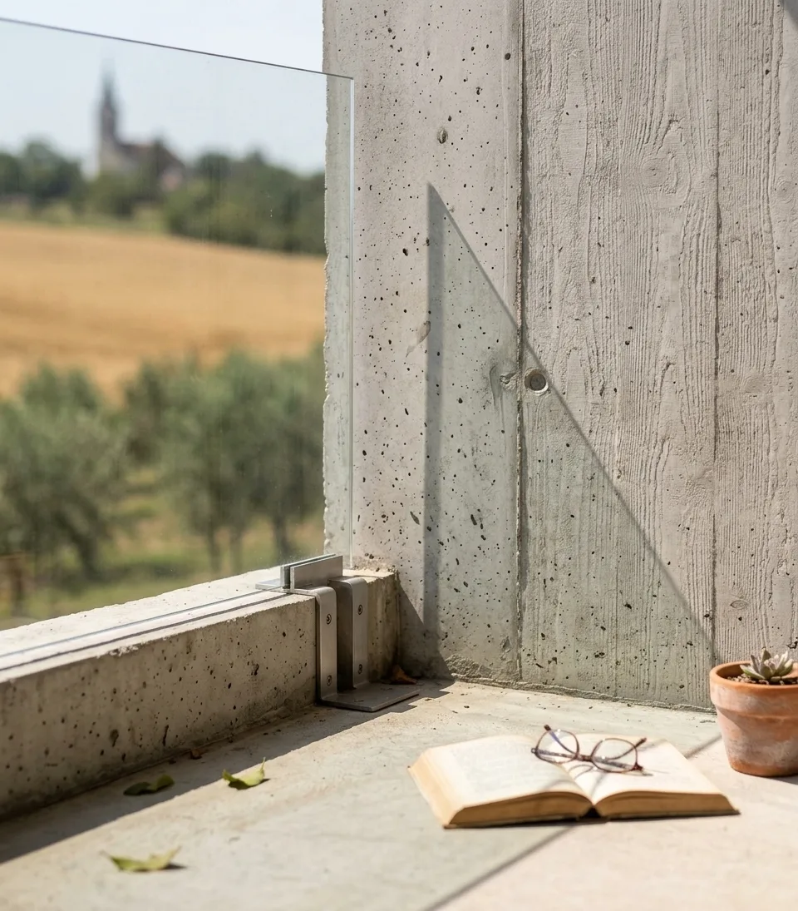
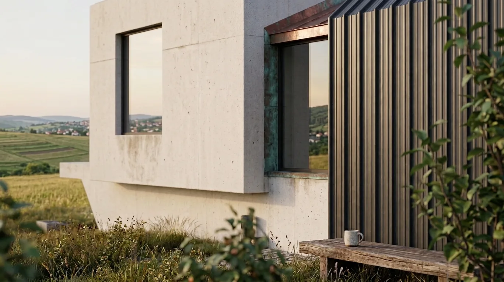
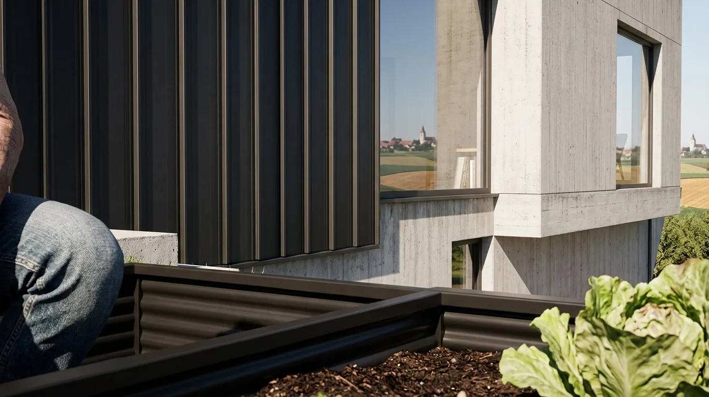
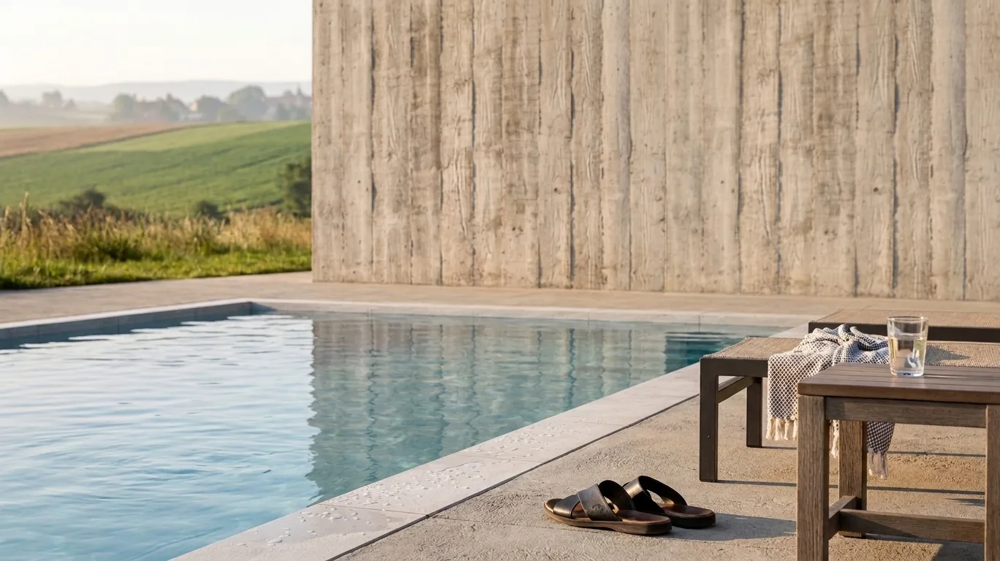
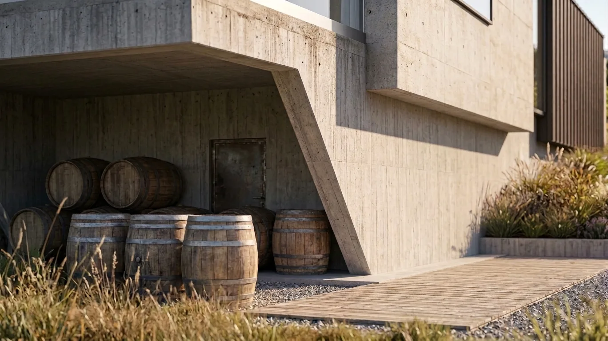